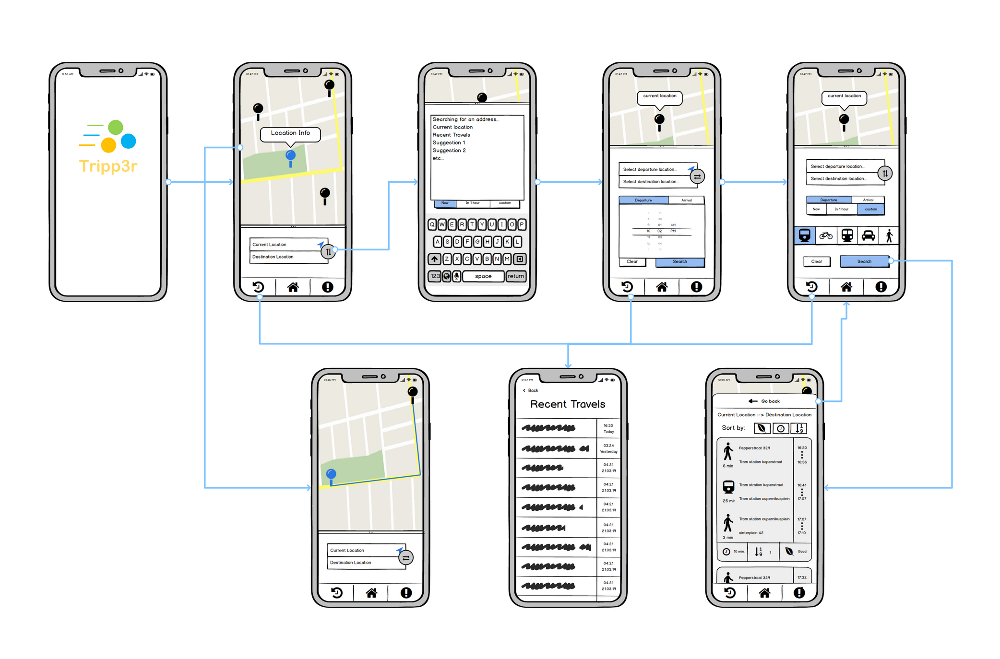
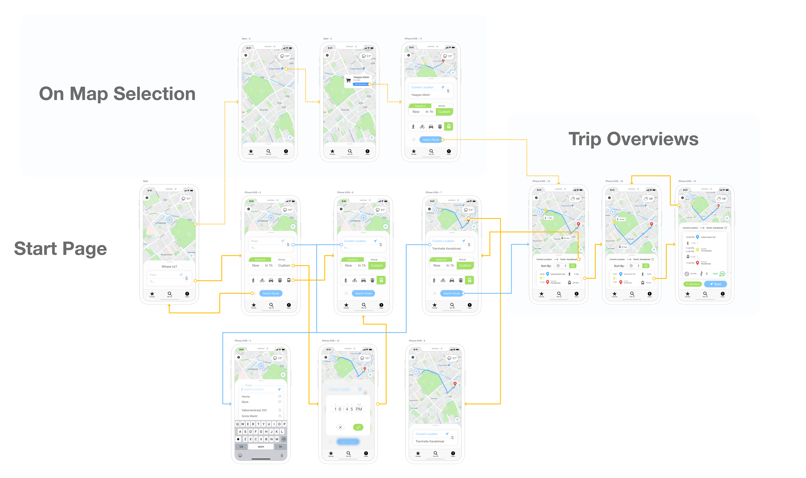
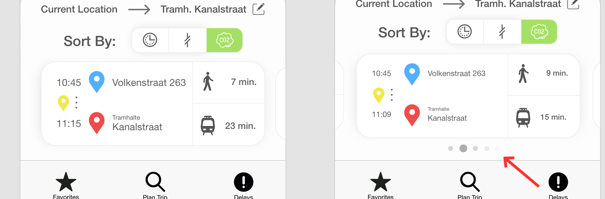
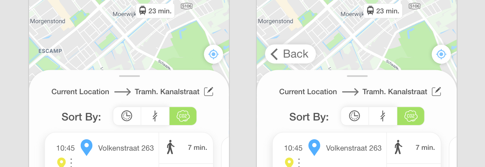
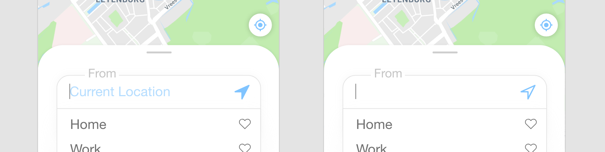

This Project was part of the course Building Engaging Prototypes. The assignment was to create and design a high-fidelity prototype of a journey planning application for a mobile device. There were some requirements that the app should have at a minimum but the rest was up to us. I made wireframes in an earlier class of the course. These wireframes should be the base bone and structure of the final prototype.
These are the wireframes on which the prototype is based:
This the final hi-fi prototype:
Some improvements I made after a user testing:
  Read more about this project.